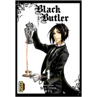
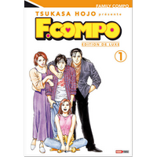

Manga
Akumetsu
Dans un japon frappé par la crise économique et secoué par les scandales politiques, un héros au masque inquiétant se lève pour débarasser le monde du mal.Mais ses méthodes sont pour le moins ... brutales. 
Black Butler
Sébastian est majordome au service d'un héritier d'une grande famille de la noblesse anglaise. En matière d'érudition, d'éducation et d'art culinaire, il est parfait. Mais ne vous fiez pas à sa distinction, si vous vous en prenez à son jeune maître, vous découvrirez sa vraie nature...Ciel aurait-il signé un pacte avec le Diable... ?!
Black Lagoon
Rokurô Okajima, modeste salarié de l'entreprise Asahi, se retrouve embarqué de force sur le black lagoon, un vieux torpilleur servant de repaire à une bande de pirates qui écume les mers de l'Asie du Sud-Est. Il va alors se retrouver propulsé dans un monde d'aventures dont il ne soupçonnait pas l'existence.
Bloody Monday
En apparence, Fujimaru Takagi est un élève comme les autres mais, en réalité, c'est un hacker de génie, qui pirate le matériel informatique de personnes malhonnêtes afin de les confondre. Il semblerait, qu'un virus meurtrier élaboré en Russie sera bientôt utilisé par des terroristes. Il s'agit d'une crise sans précédent : la survie de populations entières est en jeu !Blue Dragon
Les Kages sont des ombres maléfiques et monstrueuses qui s'attaquent aux hommes. Une seule personne peut les vaincre: Ral! Avec l'aide de Grad, le terrible blue dragon qui vit en lui, Ral parviendra-t-il à sauver le monde ?!
Claymore
Dans une époque médiévale, les humains sont terrorisés par des êtres démoniaques capables de se fondre parmi eux. Leur seule chance de survie réside dans les mains des Claymores, des femmes hybrides mi-humaines mi-démons qui possèdent des pouvoirs gigantesques.Death Note
Light Yagami est un lycéen âgé de 17 ans, jeune homme brillant, fils d'un policier, il découvre un étrange carnet qui se révèle être le livre d'un dieu de la mort : Ryûk ! Light apprendra vite quels terribles pouvoirs renferment ce carnet : tous ceux dont le nom est inscrit dans le Death Note sont appelés à mourir dans les 40 secondes qui suivent !Fairy Tail
Les guildes magiques sont des associations. Elles proposent différentes tâches aux magiciens, allant de la recherche d'un objet à l'attaque en règle.Lucy, Une jeune fille, rêve de devenir magicienne. Un jour, elle rencontre Natsu, un magicien maîtrisant le feu. Ce dernier l'invite alors à rejoindre sa guilde.
Il s'agit de la célèbre Fairy Tail, le sujet de tous les rêves de Lucy. Mais celle-ci est bien mystérieuse semble être à l'origine de nombreux scandales... 
Familly Compo
Après sa maman qui est décédée alors qu’il n’avait que six ans, Masahiko perd son père dans un accident.Le jeune étudiant se retrouve alors seul et sans ressources. Sa tante Yukari lui propose de venir emménager avec elle, son mari et sa fille.
Il ne tarde pas à découvrir qu’il ne vit absolument pas dans une famille traditionnelle, bien loin de là ! Sa tante est en fait un homme et son oncle est une femme ! Et sa cousine serait-elle en réalité un cousin ?
Full Metal Alchemist
En voulant ressusciter leur mère, Edward et Alphonse Elric utilisent une technique interdite du domaine de l'alchimie : la transmutation humaine. L'expérience tourne mal : Edward perd un bras et une jambe tandis qu'Alphonse perd son corps et son esprit se retrouve prisonnier d'une armure.Devenu alchimiste d'Etat, Edward, surnommé " FullMetal Alchimiste ", se lance, avec son frère, à la recherche de la pierre philosophale, leur seule chance de retrouver leur état initial.

GTO
Ancien voyou, chef de gang, Eikichi Onizuka décide un jour de devenir prof. Sa vocation n'a rien de pédagogique. Ce qu'il veut, c'est pouvoir sortir avec les étudiantes du lycée où il travaille.Pourtant, son sens de la justice et de l'honneur vont l'amener à devenir un véritable enseignant.

Gurren Lagann
Dans un lointain futur, les humains ont été chassés de la surface de la Terre par des hommes-bêtes. Ils sont maintenant contraints de vivre dans des cavernes souterraines, constamment menacés par les nouveaux maîtres de la planète.Simon, un jeune foreur de souterrains, et Kamina, un trublion local constamment opposé au chef du village, décident de se rebeller et d’aller là où aucun homme n’est jamais allé : à la surface de la Terre !
Sur leur route, ils seront rejoints par la pulpeuse Yoko et, ensemble, deviendront les derniers remparts de la race humaine contre les hommes-bêtes…

Hellsing
L’organisation Hellsing, avec à sa tête la jeune Integra, est un groupe d’intervention chargé de protéger l’Angleterre des forces démoniaques qui envahissent le pays. Mandatée par l’église protestante elle dispose d’une arme secrète impitoyablement efficace en la personne d’Alucard, un vampire, surpuissant....
Homunculus
Vous êtes un SDF et votre seule fortune est votre voiture. Pas un super modèle, juste une à laquelle vous tenez. Mais voilà que, du jour au lendemain, même cela vous est enlevé. Comment allez-vous remonter la pente ? En acceptant l'argent qu'on vous offre moyennant votre trépanation ?Vous pourriez en sortir diminué. Mais vous pourriez en sortir grandi. Vous pourriez également ne pas en sortir tout court...
Hunter X Hunter
Gon a presque douze ans, et rêve de devenir un hunter.Les hunters sont des aventuriers d'élite qui peuvent être chasseurs de prime, chefs-cuisinier, archéologues, zoologues, justiciers ou consultants dans divers domaines. Son père, Jin, qu'il ne connaît pas, est l'un des plus grands hunters de son temps.
C'est pour le retrouver que Gon va devenir hunter!

Inu Yasha
Quel est ce monde étrange dans lequel est tombée Kagome? Qui est cet Inu-Yasha? Qu'est-ce que la perle de Shikon?Mystères et aventures ne font que commencer!

Jackals
Cicero City, ville rongée par le crime et la corruption, est sous la coupe de nombreuses organisations criminelles qui se livrent une guerre sans merci pour son contrôle.Pour servir leurs desseins, ces gangs font régulièrement appel aux "Jackals", des assassins professionnels et impitoyables, qui louent leurs services au plus offrant...

Judge
Après avoir indirectement causé la mort de son propre frère, Hiro vit rongé par le remords. Deux ans ont passé quand il se réveille soudain dans le noir, menotté et coiffé d’un mystérieux masque de lapin. Au bout d’un couloir, le corps sans vie d’un adolescent, et sept autres victimes terrifiées, enfermées dans une étrange salle de tribunal.Tous coupables d’un crime resté impuni, ils incarnent un des péchés capitaux : gourmandise, avarice, paresse, orgueil, luxure, envie et colère.
Le procès peut commencer… À la fois juges et bourreaux, ils devront choisir toutes les douze heures celui d’entre eux qui sera sacrifié.
Lost Brain
Peut on vraiment contrôler les gens en les hypnotisant ?Ren Hiyama, un génie dépité par la réalité absurde du monde quotidien, décide de changer les bases mêmes de la société. Pour y parvenir, il commence à s’intéresser à l’hypnose, une technique au pouvoir sans limite qui lui permettra de plonger dans les tréfonds de l’âme humaine. Il se lance dans une guerre psychologique et terroriste avec le gouvernement japonais pour changer la société.
Un duel sans merci s’engage alors !
Monster
Le docteur Tenma est un jeune chirurgien japonais expatrié en Allemagne. Embauché par une clinique de Düsseldorf, doué pour son métier, parfaitement intégré, il doit même épouser la fille de son directeur. Un jour, appelé en urgence, il s'apprête à opérer un jeune garçon pour essayer de lui sauver la vie. Alors qu'il allait commencer, il reçoit alors l'ordre de ne pas le faire et de prendre en charge un autre patient arrivé entre temps, patient qui n'est autre que le maire de la ville. Mais le Docteur Tenma décide d'ignorer cet ordre et de s'occuper de l'enfant arrivé en premier..
Ping Pong Dash
Tendô Haruku est un loubard de campagne, pas très futé mais doué à la bagarre, son loisir favori jusqu’à ce qu’arrive dans son horizon... l’amour ! En la personne de Ichinose Sawa, championne de ping-pong venue tout droit de la capitale, et qui ne s’intéresse qu’aux garçons susceptibles de la surpasser dans ce sport.Bien décidé à relever le défi, Haruku décide donc de se mettre à la raquette pour conquérir le coeur de Sawa... mais pas facile de se refaire, surtout quand on est courtisé par un chef de bande prêt à tout pour faire de vous son bras droit !
Pluto
Dans un monde futuriste où les robots vivent comme des humains, des crimes mystérieux se succèdent.Des robots et des chercheurs renommés sont assassinés dans des circonstances très étranges. Toutes les victimes sont retrouvées avec un ornement en forme de cornes sur leur tête.
Gesicht, un inspecteur robot, est chargé de l'affaire. Il découvre que les robots visés sont les sept robots les plus puissants de la planète, dont il fait lui-même partie ! L'inspecteur Gesicht part alors à leur rencontre pour tenter de les protéger du danger.
Tsubasa Reservoir Chronicle
Dans le pays de Clow, vivent Shaolan et Sakura, qui s'aiment secrètement malgré leurs différences sociales. Un jour, survient la catastrophe, lors d'une attaque ennemie sur le pays : Sakura perd la mémoire pour des raisons mystérieuses !
Vampire Knight
Dans le collège Cross, étudiants humains et vampires cohabitent secrètement.Yuki, avec l’énigmatique Zero, doit s’assurer que cette cohabitation reste pacifiste. La jeune fille souhaite un futur dans lequel Hommes et vampires puissent coexister sans se combattre. Une conviction dictée aussi par les sentiments qu’elle éprouve pour le noble Kaname, le chef charismatique des vampires du collège. Un garçon qui, un jour, lui a sauvé la vie...